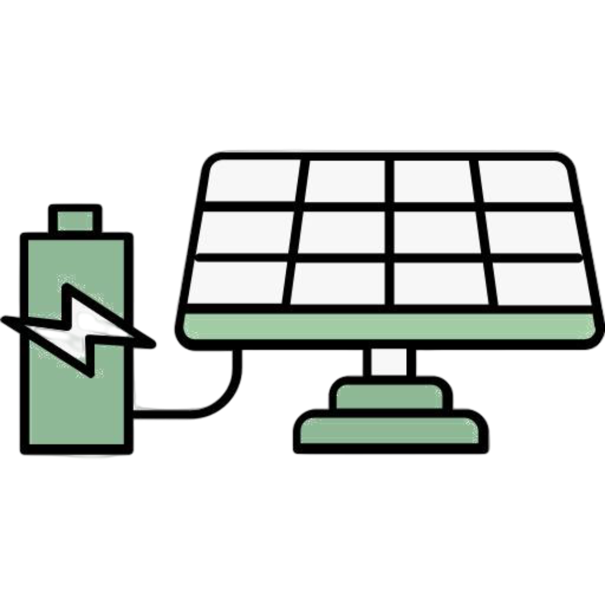
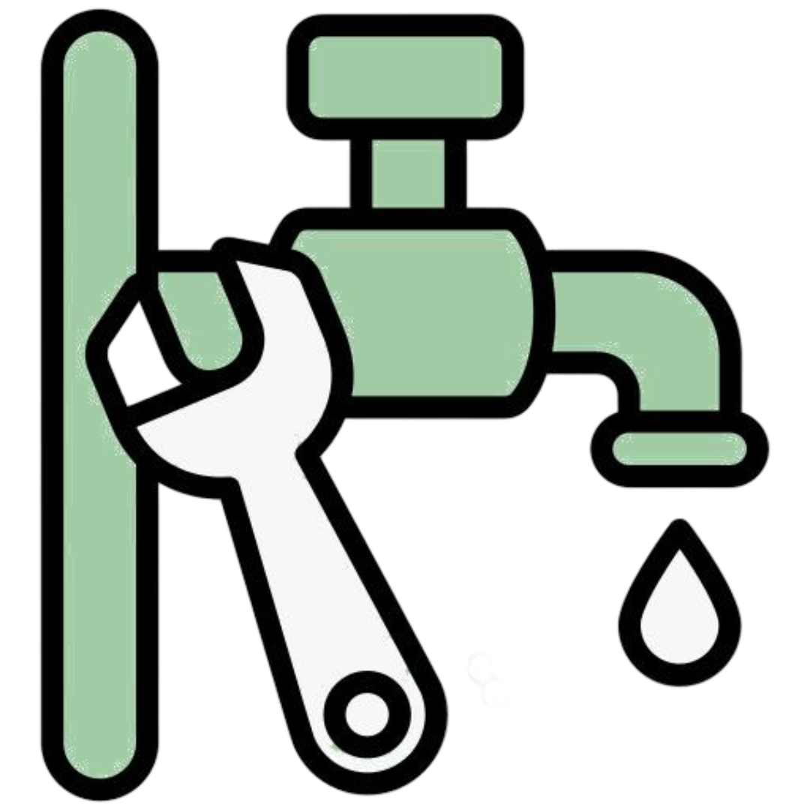
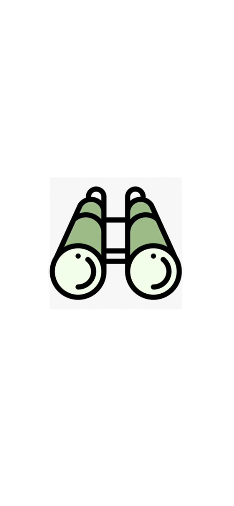

Soluções Verdes e Energéticas
Jardinagem
Manutenção de jardins, podas, limpeza e criação de espaços verdes com rigor e estética.
Canalização
Instalação, reparação e desentupimento de sistemas de água em residências e empresas.


Eletricidade
Serviços elétricos seguros e certificados, desde instalações a manutenções e reparações.

Vasos Decorativos
Cuidamos do design e disposição de vasos para valorizar o seu espaço verde com estilo e harmonia.
Nossos Serviços

Jardinagem
Manutenção de jardins, podas e criação de espaços verdes com rigor e estética.

Sistemas de Irrigação
Instalação e manutenção de sistemas automáticos para uma rega eficiente e sustentável.

Automação
Soluções inteligentes para controlo de iluminação, motores e sistemas residenciais ou empresariais.
Eletricidade
Instalações, reparações e manutenção elétrica com segurança e profissionalismo.

Sistemas Fotovoltaicos
Instalação de painéis solares e soluções de energia renovável para casas e empresas.

Canalização
Instalação, reparação e manutenção de sistemas de água com eficiência e segurança.
Sobre Nós
A JAS - Jardinagem, Automação & Serviços é a parceira ideal para transformar e cuidar do seu espaço verde. Com experiência e uma equipa dedicada, oferecemos uma ampla gama de soluções para tornar o seu jardim mais bonito, funcional e sustentável.
Missão
Garantir soluções sustentáveis e eficientes em jardinagem, automação e serviços, promovendo bem-estar e qualidade em cada projeto.

Visão
Ser referência no mercado pela inovação, qualidade e compromisso com o cliente, liderando com responsabilidade ambiental.
Valores
Ética, sustentabilidade, profissionalismo, confiança, inovação e respeito pelo cliente e pelo meio ambiente.

Localização
Cabo - Delgado
Cidade de Pemba
Alto-Gingone

Contactos
84 513 9685
87 081 7058
84 566 1410